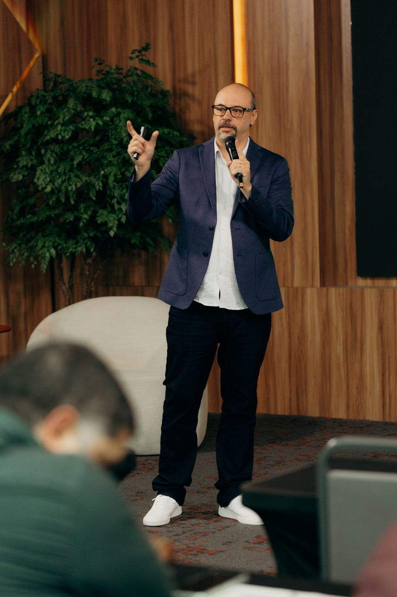
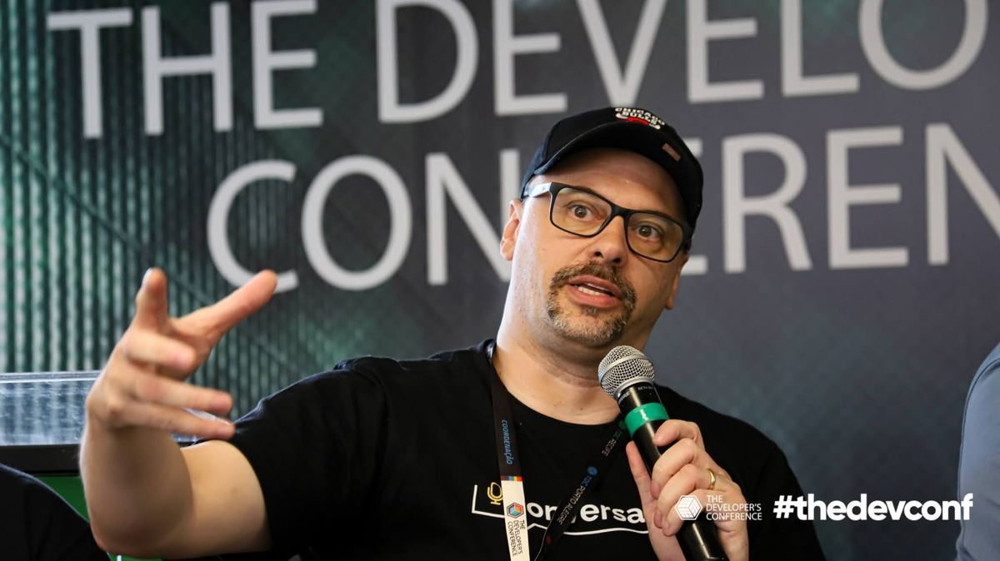
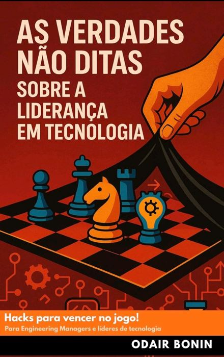

das organizações não viram retorno mensurável nos investimentos em IA generativa.
MIT Project NANDA, The GenAI Divide, 2025
Sprint IA 30 dias · para pequenas empresas
Sua empresa usando IA de verdade em 30 dias, com o ganho medido
A maioria das empresas assina uma ferramenta de IA e não vê retorno. No Sprint IA, você sai com dois processos rodando com IA, o time treinado e números de antes e depois, com o método que aplico há 25 anos em empresas como B2W e Nubank.
Atendo uma empresa por vez. A próxima vaga segue a ordem das conversas.

Odair BoninArchitecture manager, professor na Conquer e coordenador no TDC
25 anosem tecnologia, de coordenador a head de TI
15–60pessoas nos times que liderei
450+alunos formados na Conquer
4,7de nota do meu e-book de liderança na Amazon
O que as pesquisas mostram
Quase toda empresa já usa IA. Quase nenhuma colhe resultado.
O problema raramente é a ferramenta. É processo, treinamento e falta de medida. Os números abaixo vêm das maiores pesquisas sobre o tema.
das empresas capturam valor relevante com IA. Elas redesenham processos quase 3x mais do que as outras.
McKinsey, The State of AI, 2025dos profissionais se sentem bem treinados para usar IA. Quem recebe 5 horas ou mais de treino usa muito mais.
BCG, AI at Work, 2025, 10.600 pessoasdos pequenos negócios brasileiros já usam IA. Entre os que não usam, 38% dizem não saber o que ela pode fazer.
Sebrae, 7.182 negócios, 2026
1
Ferramenta sem processo
A IA entra por cima do jeito antigo de trabalhar. Cada pessoa usa de um jeito, nada muda no fluxo e o ganho fica invisível.
No SprintEscolhemos dois processos e redesenhamos o fluxo deles com a IA dentro, do começo ao fim.
2
Time sem treinamento
A empresa assina a ferramenta e espera que as pessoas aprendam sozinhas. Só uma minoria aprende, e o resto desiste.
No SprintO time aprende fazendo, em encontros práticos ao longo das quatro semanas, com um guia de uso no final.
3
Nenhuma medida de retorno
Sem um antes e depois, ninguém sabe se valeu a pena. O projeto perde prioridade e é abandonado depois do piloto.
No SprintMedimos o processo na semana 1 e de novo na semana 4. Você vê em horas e em resultado o que mudou.
O produto
Sprint IA 30 dias
Quatro semanas para tirar a IA do discurso e colocar na rotina da sua empresa, com o seu time fazendo e eu conduzindo.
- 2 processos rodando com IA no dia a dia
- Time treinado na prática, com guia de uso
- Antes e depois medido em horas e resultado
- Plano de 90 dias para os próximos passos
-
Semana 1
Mapa e medida
Levantamos como o trabalho acontece hoje, escolhemos os dois processos com maior retorno e medimos o ponto de partida.
Você recebe: mapa de oportunidades priorizado e a medida inicial.
-
Semana 2
Primeiro processo no ar
Redesenhamos o fluxo e colocamos a IA para funcionar. Exemplos: atendimento no WhatsApp, propostas, relatórios, follow-up de vendas.
Você recebe: processo 1 funcionando com o time.
-
Semana 3
Segundo processo e rotina do time
Repetimos o ciclo no segundo processo e ajustamos a rotina: quem faz o quê, como revisar e o que não delegar para a IA.
Você recebe: processo 2 funcionando e guia de uso.
-
Semana 4
Resultado e próximo nível
Medimos de novo, comparamos com a semana 1 e apresentamos o resultado para quem decide.
Você recebe: relatório de antes e depois e plano de 90 dias.
É para você se
- sua empresa tem entre 2 e 200 pessoas
- você já testou IA, mas o ganho não apareceu no resultado
- o dono ou um gestor consegue dedicar algumas horas por semana
- você quer o time fazendo, não uma solução terceirizada
Não é para você se
- procura um software pronto para instalar e esquecer
- quer um curso genérico de ferramentas de IA
- ninguém da empresa pode participar das semanas
Três níveis, como o símbolo da marca
Comece pelo diagnóstico. Avance quando fizer sentido.
O investimento do Sprint e da Mentoria é definido depois do Raio-X, de acordo com o tamanho da empresa e o escopo combinado.
Gratuito
Raio-X de IA
Uma conversa para entender onde a IA traz retorno na sua empresa.
- Conversa de 30 a 45 minutos, online
- As 3 oportunidades com maior retorno
- Recomendação franca: vale ou não começar agora
Produto principal
Sprint IA 30 dias
Dois processos rodando com IA, time treinado e ganho medido.
- 4 semanas com encontros práticos
- Suporte pelo WhatsApp durante o Sprint
- Relatório de antes e depois
- Plano de 90 dias
Recorrente
Mentoria de Liderança
Para quem lidera times e precisa de resultado sem perder as pessoas.
- Encontros quinzenais, individuais
- Delegação, metas e previsibilidade
- Feedback e formação de novos líderes
- Como liderar um time que trabalha com IA
Quem conduz
Método de grande empresa, no tamanho da sua
Sou Odair Bonin. Passei 25 anos em tecnologia, de coordenador a head de TI, liderando times de 15 a 60 pessoas. Hoje sou architecture manager e principal engineer. Na Tech SkillUp, levo para pequenas empresas o que funciona nas grandes: processo claro, gente treinada e resultado medido.
B2W (Americanas)Atendimento ao clienteModernização do SAC: atendimentos 10x mais eficientes e 20x mais rápidos, com 90% dos casos resolvidos no primeiro contato.
NubankNovo produtoLançamento do Empréstimo com Garantia de Investimentos, modalidade para pequenos empreendedores.
Plataforma de assinaturasCusto e performanceMelhoria de performance que reduziu em 40% o custo de cada assinatura com certificado.
- Professor na Conquer: liderança tech, ágil, BI e Analytics
- Coordenador da trilha Liderança Técnica no TDC
- Criador dos podcasts Conversa Ágil e Depende Cast
Palcos e conteúdo
O que ensino em sala e em palco, aplicado na sua empresa




E-book · 4,7 de 5 na Amazon
As verdades não ditas sobre a liderança em tecnologia
Hacks para vencer no jogo, escritos para engineering managers e líderes de tecnologia que querem resultado sem perder o time no caminho.
Dúvidas frequentes
Antes de agendar
Preciso ter um time de tecnologia?
Não. O Sprint usa ferramentas que pessoas de negócio conseguem operar. Se sua empresa tiver time de tecnologia, ele entra junto e o resultado costuma ser ainda maior.
Quanto custa?
O Raio-X é gratuito. O investimento do Sprint e da Mentoria depende do tamanho da empresa e dos processos escolhidos, e é apresentado numa proposta fechada depois do Raio-X, sem surpresas.
Quanto tempo minha equipe precisa dedicar?
Algumas horas por semana do dono ou do gestor responsável, mais a participação das pessoas que trabalham nos processos escolhidos durante os encontros práticos.
Quais ferramentas vamos usar?
As que fizerem sentido para o seu orçamento e para o que a empresa já usa. Pode ser ChatGPT, Gemini, Copilot, automações com n8n ou integrações com WhatsApp. A escolha vem do processo, não o contrário.
E os dados da minha empresa?
Definimos no início o que pode e o que não pode ir para ferramentas de IA, e o guia de uso do time inclui essas regras.
Por que só uma empresa por vez?
Porque eu conduzo cada Sprint pessoalmente. Atender uma empresa por vez garante atenção total durante as quatro semanas.
Raio-X de IA gratuito
Descubra onde a IA dá retorno na sua empresa
Responda em um minuto. Eu leio pessoalmente e te chamo no WhatsApp para marcar a conversa.
- 1Você preenche o formulárioLeva um minuto.
- 2Combinamos o horário pelo WhatsAppVideochamada de 30 a 45 minutos.
- 3Você sai com 3 oportunidadesE uma recomendação franca sobre o próximo passo.
Prefere falar direto? WhatsApp (11) 97697-7760 · LinkedIn